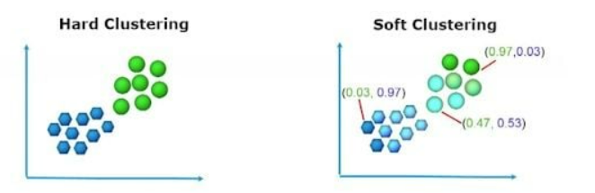
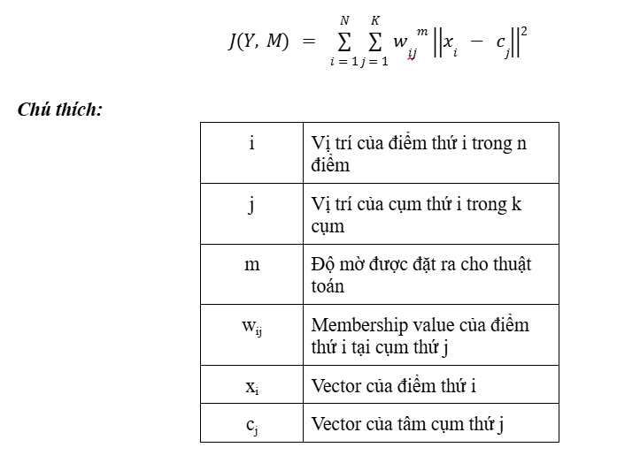

Clustering (phân cụm) làm một thuật toán học máy không giám sát (Unsupervised learning), với mục tiêu phân chia tổng thể thành các nhóm/cụm - với các điểm trong cùng 1 cụm sẽ có các đặc điểm tương đồng với nhau và khác biệt với các điểm khác cụm. Về cơ bản, các thuật toán clustering sẽ được chia làm hai nhóm chính: soft và hard clustering.
=> Hard clustering: thuật toán sẽ phân định mỗi điểm dữ liệu chỉ thuộc 1 nhóm duy nhất, chẳng hạn như thuật toán Kmeans
=> Soft clustering: thay vì thuật toán sẽ đặt mỗi điểm thuộc 1 nhóm, thì sẽ tính xác suất thuộc các cụm cho từng điểm dữ liệu. Có nghĩa rằng, một điểm có thể thuộc nhiều cụm với xác suất, điểm khả năng khác nhau. C-means sẽ là thuật toán sẽ được giới thiệu trong bài viết này.
Như đã được giới thiệu, Kmeans là một thuật toán hard clustering phổ biến. Thuật toán hoạt động với mục tiêu chia nhỏ data thành k cụm sao cho các điểm dữ liệu trong cùng một cụm có tính chất đặc điểm tương tự nhau. Các bước thực hiện của thuật toán:
Hạn chế của thuật toán Kmeans: Nhạy cảm với điểm khởi tạo ban đầu, không linh hoạt về hình dáng cụm (thuật toán kmeans có xu hướng giả định các cụm có hình dạng lồi và có kích thước tương đồng nhau-không tổng quát hoát trên dữ liệu thực tế), độ chính xác bị giới hạn bởi quy tắc dừng thuật toán, ảnh hưởng lớn bởi nhiễu, không phù hợp với dữ liệu phi tuyến tính.
Khác với kmeans, thì cmeans (fcm) cho phép một điểm dữ liệu có thể thuộc về nhiều cụm khác nhau tương ứng với mức độ phụ thuộc khác nhau (độ mờ). Bằng cách tiếp cận này thì có thể khám phá ra các cụm dữ liệu phức tạp theo cách linh hoạt hơn. Các bước thực hiện của thuật toán:
Hạn chế của thuật toán Cmeans: Nhạy cảm với thay đổi số lượng cụm (mặc dù có khả năng điều chỉnh số lượng cụm bằng cách điều chỉnh độ mờ, nhưng lựa chọn số cụm ban đầu không hợp lý có thể dẫn đến phân cụm không tối ưu), tính toán phức tạp, không phân biệt tốt giữa các cụm trùng lặp, khó xác định tham số mờ (m), tương tự như kmeans thì fcm vẫn bị ảnh hưởng lớn bởi outlier, không xử lý tốt với dữ liệu không đạt phân phối chuẩn (bởi vì fcm giả định phân phối sẽ là ppc).
Mặc dù cả hai thuật toán có sự khác biệt nhau, tuy nhiên về cơ bản thì cmeans được xem như làm một biến thể của kmeans với sự cải tiến dựa trên tham số m vào công thức tính toán. Chính vì vậy công thức tính hàm loss của cả hai có thể quy về công thức chung dưới đây:
Cần lưu ý rằng, nếu tham số m=1 thì thuật toán cmeans sẽ quay về thành kmeans.
Câu trả lời chính xác là độ mờ, giả sử với trường hợp bên trên, với điểm dữ liệu thứ 5 và thứ 6, đang có vị trí nằm giữa và có khoảng cách đến center của các cụm là như nhau, lúc này kmeans sẽ tạo ra sự bias và cho 2 điểm này vào 1 cụm đang có số lượng điểm nhiều hơn (giả sử là cụm 0), còn với cmeans thì nó sẽ xét 2 điểm này có membership như nhau ở 2 cụm.